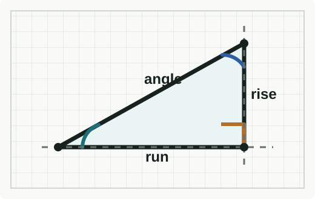

Machinist Trig Calculators
CNC Trig
Fast geometry answers for workholding, setup, and layout. Built for the bench, the machine, and the phone in your pocket.

Choose A Tool
Calculators
General
Triangle Solver
Solve sides and angles from the triangle values you already know.
Open calculator
Lathe
Chamfer Solver
Work out chamfer geometry for common turning jobs.
Open calculator
Mill
B-Axis Rotation Solver
Calculate horizontal mill coordinate changes after B-axis rotation.
Open calculator
Shop Notes
Use any unit. Results stay in the same unit as the input values.
Each calculator will include decimal-place rounding control.
No login, no tracking, no backend.